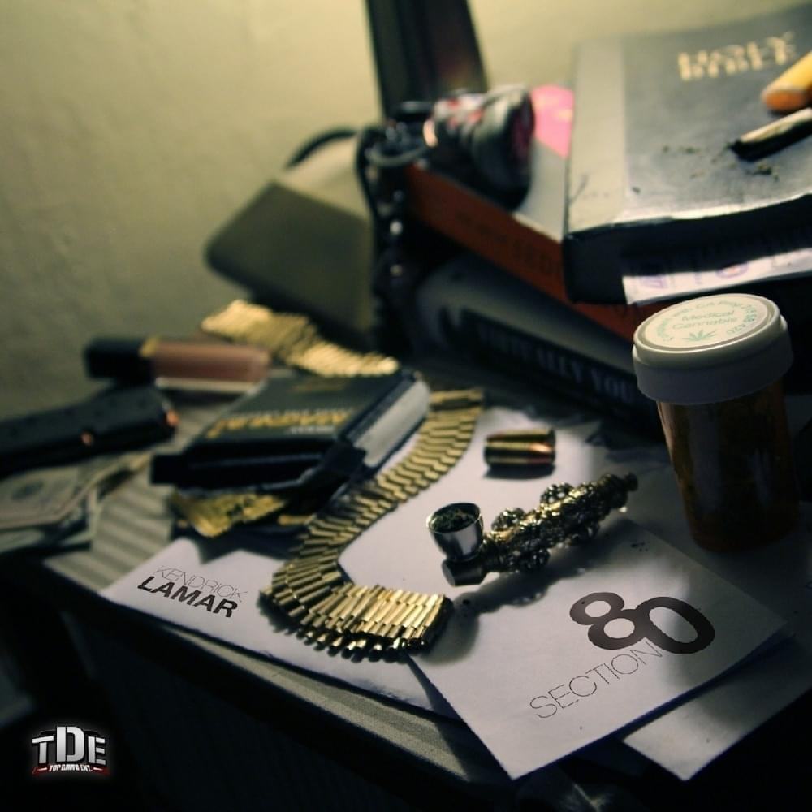
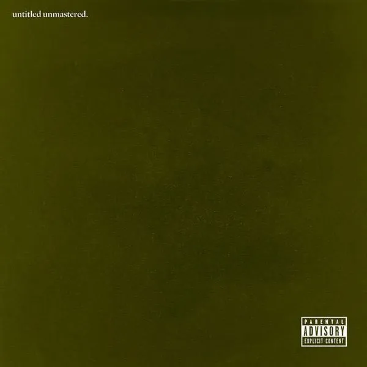

Overly Dedicated (2010)
An early Kendrick Lamar project that helped build his reputation in hip-hop. It features lyrical storytelling and tracks like “Ignorance Is Bliss”.

Section.80 (2011)
Kendrick Lamar’s debut studio album, known for its storytelling about youth, addiction, and social issues.
good kid, m.A.A.d city (2012)
Kendrick’s breakthrough album featuring hits like “Swimming Pools” and “Bitch, Don’t Kill My Vibe.”
To Pimp a Butterfly (2015)
A socially conscious masterpiece that blends jazz, funk, and hip-hop. Includes “Alright” and “King Kunta.”

untitled unmastered. (2016)
A collection of unreleased tracks recorded during the To Pimp a Butterfly sessions. The project features raw performances, experimental sounds, and Kendrick’s signature storytelling.
DAMN. (2017)
Winner of the Pulitzer Prize in Music, featuring “HUMBLE.” and “DNA.”
Mr. Morale & the Big Steppers (2022)
A double album exploring personal struggles, identity, and society. Includes “N95” and “United in Grief.”
GNX (2024)
Kendrick’s sixth studio album, featuring collaborations with SZA and production from Jack Antonoff and Sounwave. Includes tracks like “Luther” and “Squabble Up.”